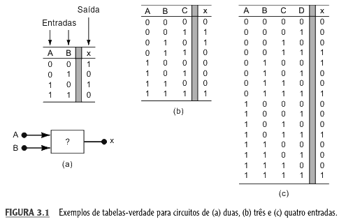
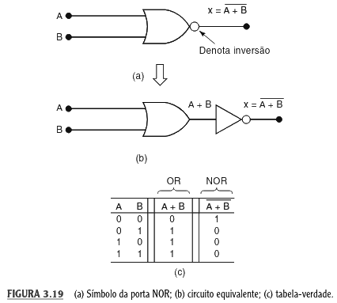
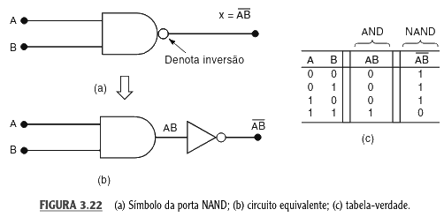

Professor: Gabriel Soares Baptista

$$\begin{array}{cc||c} A & B & x = A + B \\ \hline 0 & 0 & 0 \\ 0 & 1 & 1 \\ 1 & 0 & 1 \\ 1 & 1 & 1 \\ \end{array}$$
$$x = A + B$$
$$\begin{array}{ccc||c} A & B & C & x = A + B + C \\ \hline 0 & 0 & 0 & 0 \\ \text{Outras combinações} & \dots & \dots & 1 \\ 1 & 1 & 1 & 1 \end{array}$$
$$x = A + B + C$$
$$\begin{array}{cc||c} A & B & x = AB \\ \hline 0 & 0 & 0 \\ 0 & 1 & 0 \\ 1 & 0 & 0 \\ 1 & 1 & 1 \\ \end{array}$$
$$x = AB$$
$$\begin{array}{ccc||c} A & B & C & x = ABC \\ \hline 0 & 0 & 0 & 0 \\ \text{Até} & \dots & \dots & 0 \\ 1 & 1 & 1 & 1 \end{array}$$
$$x = ABC$$
$$\begin{array}{c||c} A & x = \bar{A} \\ \hline 0 & 1 \\ 1 & 0 \end{array}$$
$$x = \bar{A}$$
A ordem de execução padrão do hardware para evitar ambiguidades é:
Devem ser usados para forçar operações de menor prioridade (como o OR) a serem executadas antes do produto (AND).
A posição da "bolinha" de inversão altera completamente a expressão algébrica:
Inversão na Entrada
A entrada $A$ é negada antes de chegar à porta OR.
$$x = \bar{A} + B$$
Inversão na Saída (Porta NOR)
A soma lógica é realizada primeiro, e o resultado é invertido.
$$x = \overline{A + B}$$
Circuitos complexos são construídos rastreando os termos da esquerda para a direita:
$$x = ABC(A + D)$$
A estrutura física dita a hierarquia da expressão algébrica:
$$x = [D + (A + B)C] \cdot E$$
O valor da saída $x$ é encontrado substituindo as variáveis e respeitando a hierarquia.
Exemplo: $x = \bar{A}BC(\overline{A+D})$ para $A=0, B=1, C=1, D=1$
$$\begin{split} &\text{1. Substituição:} \; x = \bar{0} \cdot 1 \cdot 1 \cdot (\overline{0+1}) \\[6pt] &\text{2. Resolve Inversões e Parênteses:} \; x = 1 \cdot 1 \cdot 1 \cdot (\bar{1}) \\[6pt] &\text{3. Finalização:} \; x = 1 \cdot 1 \cdot 1 \cdot 0 = \boxed{0} \end{split}$$
Para diagnóstico de falhas, mapeamos pontos de passagem ($u, v, w$) na Tabela-Verdade.
$$\begin{array}{ccc||c|c|c||c} A & B & C & u = \bar{A} & v = u \cdot B & w = B \cdot C & x = v + w \\ \hline 0 & 0 & 0 & 1 & 0 & 0 & 0 \\ 0 & 0 & 1 & 1 & 0 & 0 & 0 \\ 0 & 1 & 0 & 1 & 1 & 0 & 1 \\ 0 & 1 & 1 & 1 & 1 & 1 & 1 \\ 1 & 0 & 0 & 0 & 0 & 0 & 0 \\ 1 & 0 & 1 & 0 & 0 & 0 & 0 \\ 1 & 1 & 0 & 0 & 0 & 0 & 0 \\ 1 & 1 & 1 & 0 & 0 & 1 & 1 \\ \end{array}$$
Partindo de $y = AC + B\bar{C} + \bar{A}BC$, montamos primeiro o OR final e depois seus alimentadores.
Identifique primeiro as portas cujas entradas vêm diretamente das variáveis externas (parênteses internos).
São formadas pela combinação das operações fundamentais com uma inversão final.


A saída NAND permanece em nível alto e só cai para zero quando ambas as entradas são ativas simultaneamente.
Utilizada para descrever cenários onde a saída do circuito é ALTA (1).
Mintermos ($m$): Cada linha onde a saída é 1 gera um produto.
Regra:
Notação: $X = \Sigma m(1, 3, 6)$.
$$X = \underbrace{\bar{A}\bar{B}C}_{m_1} + \underbrace{\bar{A}BC}_{m_3} + \underbrace{AB\bar{C}}_{m_6}$$
Utilizada para mapear os zeros (0) da função, definindo o que desativa o circuito.
Maxtermos ($M$): Cada linha onde a saída é 0 gera uma soma.
Regra Dual:
Notação: $X = \Pi M(0, 2, 4, 5, 7)$.
$$\boxed{X = (A+B+C)(A+\bar{B}+C)(\bar{A}+B+C)(\bar{A}+B+\bar{C})(\bar{A}+\bar{B}+\bar{C})}$$
Como o sistema é binário, as linhas são complementares.
O conjunto de índices da forma POS é exatamente composto pelos números que não aparecem na forma SOP, e vice-versa.
$$\begin{array}{c|c|c} A & B & Y \\ \hline 0 & 0 & 1 \\ 0 & 1 & 0 \\ 1 & 0 & 1 \\ 1 & 1 & 0 \\ \end{array}$$
Extraia a SOP e sua notação $\Sigma$.